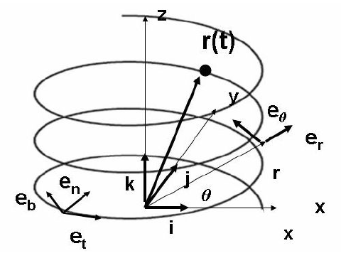

Topic 1: Fundamentals and Particle Kinematics - Problem Sets
An out-of-control rocket traces an upward helical trajectory described in Cartesian coordinates for $t > 0$ by:
where $a$, $v_z$, and $\omega$ are constants.

-
(a)
Express the position, velocity, and acceleration vectors in the Cartesian $x, y, z$ system using unit vectors $\mathbf{i}, \mathbf{j}, \mathbf{k}$.
-
(b)
Express the position, velocity, and acceleration vectors in the cylindrical coordinate system using unit vectors $\mathbf{e}_R, \mathbf{e}_\theta, \mathbf{e}_z$.
-
(c)
Express the velocity and acceleration vectors using $s, \rho$ and the vector basis $\mathbf{e}_t, \mathbf{e}_n, \mathbf{e}_b$.
-
(d)
Compute the modulus of the velocity vector.
-
(e)
Express the evolution of the arc-length coordinate as a function of time.
-
(f)
Write down the trajectory as a function of the arc-length coordinate.
-
(g)
Where is the center of curvature for this curve when the particle is located at $(x, y, z) = (a, 0, 0)$?
Worked Solution [ Click to Expand ]
Reference Frames, Bases and Coordinates
The rocket is modelled as a point particle $P$. Its three Cartesian coordinates are given as functions of time, so the motion is prescribed: the problem is purely kinematic and has no forces section.
| Item | Definition |
|---|---|
| Fixed frame | $S_0 = \{O;\ \mathbf i_0, \mathbf j_0, \mathbf k_0\}$, origin at the launch point, $\mathbf k_0$ vertical, along the axis of the helix |
| Fixed basis | $B_0 = \{\mathbf i_0, \mathbf j_0, \mathbf k_0\}$ (Notes.pdf, Eq. 1.1) |
| Cylindrical basis | $B_C = \{\mathbf e_R, \mathbf e_\theta, \mathbf e_z\}$, obtained from $B_0$ by a rotation of angle $\theta$ about $\mathbf k_0$ |
| Intrinsic basis | $B_F = \{\mathbf e_t, \mathbf e_n, \mathbf e_b\}$ (tangent, principal normal, binormal; Notes.pdf, Eq. 2.13) |
| Cartesian coordinates | $x = a\cos(\omega t)$, $y = a\sin(\omega t)$, $z = v_z t$ (statement) |
| Cylindrical coordinates | $R = \sqrt{x^2+y^2}$, $\theta = \arctan(y/x)$, $z$ (Notes.pdf, Eq. 2.23) |
| Arc length | $s$, measured along the helix from the point reached at $t = 0$ |
| Data | $a$ [m] radius of the helix, $\omega$ [rad/s] angular frequency, $v_z$ [m/s] vertical speed, $t$ [s] time |
| Hypotheses | $a \gt 0$, $\omega \gt 0$, $v_z \gt 0$ constant; the law of the statement is taken to hold for $t \ge 0$ so that part (g), at $t = 0$, is the limit $t \to 0^+$ |
| Degrees of freedom | 3 Cartesian coordinates minus 2 relations of the helix ($x = a\cos(\omega z/v_z)$, $y = a\sin(\omega z/v_z)$) leave 1; it is fixed by the time law |
The position vector is first written in $B_0$, then in $B_C$; the intrinsic basis is built from the velocity in the kinematics section.
Change of Basis and Position Vector
The view along $\mathbf k_0$ (out of the paper) shows the rotation that takes $B_0$ into $B_C$; the right triangle of $\mathbf e_R$ gives its components.
Units: $[R] = [a] = [\mathrm{L}]$; $[\theta] = [\omega][t] = [\mathrm{T^{-1}}][\mathrm{T}] = 1$; $[z] = [\mathrm{L\,T^{-1}}][\mathrm{T}] = [\mathrm{L}]$
Meaning: the rocket stays on a cylinder of radius $a$ about $\mathbf k_0$, turns about it at the constant rate $\omega$ and climbs at the constant rate $v_z$.
In the view of the figure $\mathbf k_0$ points out of the paper (⊙), $\mathbf i_0$ to the right and $\mathbf j_0$ up. A positive $\theta$ turns $\mathbf i_0$ towards $\mathbf j_0$, counterclockwise, as the right-hand rule about $\mathbf k_0$ requires.
- $\mathbf e_R$ is the hypotenuse (length 1) of the right triangle whose adjacent leg lies along $\mathbf i_0$ and whose opposite leg lies along $\mathbf j_0$; the angle at $O$ is $\theta$.
- $\mathbf e_\theta$ is $\mathbf e_R$ turned a further right angle counterclockwise. Its triangle has the angle $\theta$ between $\mathbf e_\theta$ and $\mathbf j_0$: the adjacent leg lies along $\mathbf j_0$, the opposite leg along the negative $\mathbf i_0$ direction, which is the origin of the minus sign.
Units: every entry is a cosine or a sine, dimensionless: $[1]$
Meaning: the columns are $\mathbf e_R$, $\mathbf e_\theta$, $\mathbf e_z$ written in $B_0$; the matrix is a proper rotation, so $B_C$ is orthonormal and right-handed at every instant.
The position vector is built in two steps: from $O$ to the foot $Q$ of $P$ on the plane of $\mathbf i_0$ and $\mathbf j_0$, then up from $Q$ to $P$.
Units: $[a] = [\mathrm{L}]$ and $[v_z t] = [\mathrm{L\,T^{-1}}][\mathrm{T}] = [\mathrm{L}]$
Meaning: in $B_C$ the position has no $\mathbf e_\theta$ component: the turning of the rocket is carried entirely by the direction of $\mathbf e_R$.
Kinematics
(a) Velocity and acceleration in the fixed basis
Units: $[a\omega] = [\mathrm{L\,T^{-1}}]$, $[v_z] = [\mathrm{L\,T^{-1}}]$; $[a\omega^2] = [\mathrm{L\,T^{-2}}]$
Meaning: the acceleration is horizontal and points from $P$ to the axis of the helix; the vertical motion is uniform.
(b) Velocity and acceleration in the cylindrical basis
$B_C$ turns about $\mathbf k_0$ at the rate of $\theta$, which is $\omega$, so its angular velocity is $\omega\,\mathbf k_0$.
Units: $[\omega] = [\mathrm{T^{-1}}]$, the rate of change of a dimensionless unit vector
Meaning: each unit vector of the horizontal plane turns at the rate $\omega$, always perpendicular to itself.
Units: $[a\omega] = [v_z] = [\mathrm{L\,T^{-1}}]$; $[a\omega^2] = [\mathrm{L\,T^{-2}}]$
Meaning: projecting the Cartesian result of part (a) on $\mathbf e_R$ gives the same centripetal acceleration; the cylindrical form shows at once that it has no $\mathbf e_\theta$ or $\mathbf e_z$ part.
(d) Modulus of the velocity
The speed is computed before part (c) because the intrinsic basis needs it.
Units: $\sqrt{[\mathrm{L\,T^{-1}}]^2} = [\mathrm{L\,T^{-1}}]$
Meaning: the rocket travels its path at a constant speed, the hypotenuse of the horizontal speed $a\omega$ and the vertical speed $v_z$.
(c) Intrinsic basis and the velocity and acceleration with $s$ and $\rho$
The unit tangent lies on the plane tangent to the cylinder; the figure folds that plane down onto the paper, with $\mathbf e_\theta$ to the right and $\mathbf e_z$ up.
Units: $[a\omega]/[V] = [v_z]/[V] = 1$, a unit vector
Meaning: the tangent climbs at the constant helix angle $\gamma$ above the horizontal direction $\mathbf e_\theta$.
Units: $[v_z^2]/[a\omega^2] = [\mathrm{L^2T^{-2}}]/[\mathrm{L\,T^{-2}}] = [\mathrm{L}]$
Meaning: the normal points horizontally to the axis of the helix; the osculating circle is larger than the cylinder because the climb straightens the path.
Units: dimensionless, a unit vector
Meaning: the binormal leans back from the vertical by the helix angle; it is constant in $B_C$ but turns with $\mathbf e_\theta$ in $S_0$.
Units: dimensionless entries
Meaning: $B_F$ is a proper orthonormal basis; it is $B_C$ turned so that its first vector follows the climbing tangent.
Units: $[V^2/\rho] = [\mathrm{L^2T^{-2}}]/[\mathrm{L}] = [\mathrm{L\,T^{-2}}]$
Meaning: no tangential acceleration (uniform speed): all the acceleration turns the velocity, and it has no binormal component, as Eq. 2.17 requires.
(e) and (f) Arc length and trajectory in terms of $s$
Units: $[\mathrm{L\,T^{-1}}][\mathrm{T}] = [\mathrm{L}]$
Meaning: the distance along the helix grows linearly in time.
Units: $[\omega s/V] = [\mathrm{T^{-1}}][\mathrm{L}]/[\mathrm{L\,T^{-1}}] = 1$; $[v_z s/V] = [\mathrm{L}]$
Meaning: the geometric curve, independent of how fast it is travelled; its derivative with respect to $s$ has unit modulus, as Eq. 2.9 requires.
(g) Centre of curvature at the point $(a, 0, 0)$
The meridian plane of $\mathbf i_0$ and $\mathbf k_0$ at that instant shows $P$, the normal and the centre $C$.
Units: $[\mathrm{L^2T^{-2}}]/[\mathrm{L\,T^{-2}}] = [\mathrm{L}]$
Meaning: the centre lies beyond the axis of the helix, on the opposite side from $P$, because the radius of curvature exceeds $a$.
Answers and Checks
Units: every term checked in its own box: speeds $[\mathrm{L\,T^{-1}}]$, accelerations $[\mathrm{L\,T^{-2}}]$, lengths $[\mathrm{L}]$
Meaning: a uniform helical motion: constant speed, constant curvature, acceleration always horizontal and toward the axis.
Units: $[\mathrm{L^3T^{-3}}]/([\mathrm{L\,T^{-1}}][\mathrm{L\,T^{-2}}]) = [\mathrm{L}]$
Meaning: both limits are the expected circle and straight line, and a second route to the radius of curvature gives the same value.
Check against the official key: the solution keys of Problems.pdf, p. 72 list Problem 1 with no answer, so there is no official result to compare with. The results are supported by the limiting cases and by the second computation of the radius of curvature in the box above.
A planar spiral is given by the equation $r = \alpha e^{\beta\theta}$, where $\alpha$ and $\beta$ are constants, $r$ is the radial coordinate, and $\theta$ is the angular coordinate. If a particle moves along the spiral according to the equation $\theta = \delta t^n$ (where $\delta$ is a constant), determine:
-
(a)
The radial and transverse components of the velocity.
-
(b)
The radial and transverse components of the acceleration.
-
(c)
The tangential and normal components of the velocity.
-
(d)
The tangential and normal components of the acceleration.
-
(e)
The radius of curvature of the spiral.
Worked Solution [ Click to Expand ]
Reference Frames, Bases and Coordinates
The particle $P$ moves on a given planar curve with a given angular law, so the motion is prescribed and the problem is purely kinematic (no forces section).
| Item | Definition |
|---|---|
| Fixed frame | $S_0 = \{O;\ \mathbf i_0, \mathbf j_0, \mathbf k_0\}$, $O$ the pole of the spiral, the motion in the plane of $\mathbf i_0$ and $\mathbf j_0$, $\mathbf k_0$ normal to it |
| Polar basis | $B_C = \{\mathbf e_r, \mathbf e_\theta, \mathbf k_0\}$, $B_0$ turned by $\theta$ about $\mathbf k_0$ (cylindrical basis with $z = 0$, Notes.pdf, Eq. 2.24) |
| Intrinsic basis | $B_F = \{\mathbf e_t, \mathbf e_n, \mathbf e_b\}$ (Notes.pdf, Eq. 2.13) |
| Coordinates | polar radius $r$ and polar angle $\theta$, measured from $\mathbf i_0$ counterclockwise about $\mathbf k_0$ |
| Trajectory | $r = \alpha e^{\beta\theta}$ (logarithmic spiral) |
| Time law | $\theta = \delta t^n$ |
| Data | $\alpha$ [m], $\beta$ [1], $\delta$ [rad s$^{-n}$], $n$ [1], $t$ [s] |
| Hypotheses | $\alpha \gt 0$, $\delta \gt 0$, $n \gt 0$, $t \gt 0$ (so the angular rate is positive); $\beta \gt 0$ (the spiral opens as the angle grows; for $\beta \lt 0$ the same formulas hold with $\psi = \operatorname{arccot}\beta$ in $(0, \pi)$); $z = 0$ throughout |
| Degrees of freedom | 2 plane coordinates minus 1 relation (the spiral) leave 1; it is fixed by the time law |
| Notation | $\dot\theta$, $\ddot\theta$, $\dot r$, $\ddot r$ time derivatives; $v$ speed; $\rho$ radius of curvature |
Change of Basis and Position Vector
The view along $\mathbf k_0$ (out of the paper) shows the rotation by $\theta$ from $B_0$ to the polar basis.
In the view of the figure $\mathbf k_0$ points out of the paper (⊙), $\mathbf i_0$ to the right, $\mathbf j_0$ up; a positive $\theta$ is counterclockwise by the right-hand rule about $\mathbf k_0$.
Units: dimensionless entries
Meaning: the minus sign of the first component of $\mathbf e_\theta$ appears because, for $0 \lt \theta \lt \pi$, the vector turned a right angle counterclockwise from $\mathbf e_r$ points into the half-plane of negative $x$.
Units: $[\alpha] = [\mathrm{L}]$; the exponent $\beta\delta t^n$ is dimensionless, as an exponent must be
Meaning: the radius grows (for positive $\beta$) by the same factor every time $\theta$ advances by the same angle.
Kinematics
Units: $[\dot\theta] = [\mathrm{T^{-n}}][\mathrm{T^{n-1}}] = [\mathrm{T^{-1}}]$; $[\dot r] = [\mathrm{L\,T^{-1}}]$; $[\ddot r] = [\mathrm{L\,T^{-2}}]$
Meaning: on this spiral the radial rate is always the fraction $\beta$ of the transverse rate, whatever the time law.
Units: $[\mathrm{T^{-1}}]$
Meaning: each polar unit vector turns with the radius, perpendicular to itself.
(a) Radial and transverse components of the velocity
Units: $[\mathrm{L}][\mathrm{T^{-1}}] = [\mathrm{L\,T^{-1}}]$ for both
Meaning: the ratio of radial to transverse velocity is the constant $\beta$: the velocity always makes the same angle with the radius.
(b) Radial and transverse components of the acceleration
Units: $[\delta t^{n-2}] = [\mathrm{T^{-2}}]$, $[\delta t^n] = 1$, so both are $[\mathrm{L\,T^{-2}}]$
Meaning: for uniform rotation ($n$ equal to one) the bracket loses its constant term and the acceleration is set only by the square of the angular rate.
(c) Tangential and normal components of the velocity
The unit tangent makes a constant angle with $\mathbf e_r$; the fold-down triangle of the velocity gives its components.
Units: $[v] = [\mathrm{L\,T^{-1}}]$; $\mathbf e_t$ dimensionless
Meaning: the velocity has no normal component, as for every motion (Eq. 2.16); the angle between the radius and the tangent never changes, which is why the curve is called equiangular.
Units: $[\rho] = [\mathrm{L}]$
Meaning: $\mathbf e_n$ is $\mathbf e_t$ turned a right angle counterclockwise: the particle turns to its left, about $\mathbf k_0$, as $\theta$ grows.
Seen along $\mathbf k_0$ (⊙), $B_F$ is $B_C$ turned counterclockwise by the constant angle $\psi$; the minus sign of the first component of $\mathbf e_n$ comes from the same right-hand rule as the minus sign of $\mathbf e_\theta$.
Units: dimensionless entries
Meaning: the intrinsic basis is rigidly attached to the polar basis at the fixed angle $\psi$: a property of the logarithmic spiral alone.
(d) Tangential and normal components of the acceleration
Units: $[\delta^2t^{2n-2}] = [\mathrm{T^{-2}}]$, so both are $[\mathrm{L\,T^{-2}}]$
Meaning: the normal acceleration is always positive (the path always bends to the same side); the tangential one changes the speed both because the radius grows and because the angular rate changes.
Units: $[\mathrm{L\,T^{-2}}]$
Meaning: projecting the polar acceleration of part (b) gives the same intrinsic components as Eq. 2.17: the two routes agree.
(e) Radius of curvature and centre of curvature
The main plane shows the spiral, the polar and intrinsic bases at $P$ and the centre of curvature $C$.
Units: $[\mathrm{L}]$
Meaning: the triangle $OPC$ has a right angle at $O$ (the segment $OC$ lies along $\mathbf e_\theta$, the segment $OP$ along $\mathbf e_r$): its legs are $r$ and the modulus of $\beta r$, and its hypotenuse $PC$ is $\rho$. The radius of curvature depends only on the shape, not on $\delta$ or $n$.
Answers and Checks
Units: velocities $[\mathrm{L\,T^{-1}}]$, accelerations $[\mathrm{L\,T^{-2}}]$, $\rho$ in $[\mathrm{L}]$
Meaning: every component is proportional to the current radius: the spiral is self-similar.
Units: $[\mathrm{L}]$ and $[\mathrm{L\,T^{-2}}]$
Meaning: the circle is recovered, and the radius of curvature found from the geometry (Eq. 2.12) matches the one found from the projected acceleration.
Check against the official key: the solution keys of Problems.pdf, p. 72 list Problem 2 with no answer, so there is no official result to compare with. The results are supported by the limiting cases and by the two independent routes to the intrinsic components (time derivative of the speed and projection of the polar acceleration).
A point particle describes the astroid:
with a motion whose tangential acceleration is constant, $k$. If the point is initially at rest at $\phi = 0$, compute the evolution of the position as a function of time while the particle is in one of the smooth segments of the astroid. (Hint: $ds = \sqrt{dx^2 + dy^2}$).
Worked Solution [ Click to Expand ]
Reference Frames, Bases and Coordinates
The particle $P$ moves on a given planar curve with a given tangential acceleration. The only unknown is the time law along the curve, so the problem is kinematic (no forces section): the position follows from integrating the motion along the path.
| Item | Definition |
|---|---|
| Fixed frame | $S_0 = \{O;\ \mathbf i_0, \mathbf j_0, \mathbf k_0\}$, $O$ the centre of the astroid, the curve in the plane of $\mathbf i_0$ and $\mathbf j_0$, $\mathbf k_0$ normal to it |
| Intrinsic basis | $B_F = \{\mathbf e_t, \mathbf e_n, \mathbf e_b\}$ (Notes.pdf, Eq. 2.13) |
| Trajectory | $x = a\cos^3\phi$, $y = a\sin^3\phi$ (statement); $\phi$ is a parameter of the curve, not the polar angle of $P$ |
| Polar angle of $P$ | $\vartheta$, measured from $\mathbf i_0$ counterclockwise, with $\tan\vartheta = y/x$ |
| Arc length | $s$, measured along the curve from the cusp $(a, 0)$ at $\phi = 0$ |
| Tangential acceleration | $a_t = \ddot s = k$, constant (statement) |
| Initial conditions | at $t = 0$: $\phi = 0$ (so $s = 0$) and rest (so $\dot s = 0$) |
| Data | $a$ [m], $k$ [m s$^{-2}$], $t$ [s] |
| Hypotheses | $a \gt 0$, $k \gt 0$; the particle leaves the cusp $(a, 0)$ along the first-quadrant arc, with $0 \le \phi \le \pi/2$ and $\phi$ growing (the smooth segment between the cusps $(a, 0)$ and $(0, a)$); $s$ grows with $\phi$ |
| Degrees of freedom | 2 plane coordinates minus 1 relation (the curve) leave 1, the arc length $s$; the time law $s(t)$ is the unknown |
Change of Basis and Position Vector
The main plane shows the astroid, the smooth arc used, and the position vector of $P$ built from its two projections.
Units: $[a] = [\mathrm{L}]$; powers of cosines and sines are dimensionless
Meaning: the horizontal projection $a\cos^3\phi$ and the vertical projection $a\sin^3\phi$ are the legs of the right triangle whose hypotenuse is the segment $OP$.
The parameter is related to the polar angle through an auxiliary circle of radius $a$.
Units: dimensionless
Meaning: $\phi$ is the angle of the point $(a\cos\phi, a\sin\phi)$ of the auxiliary circle, not the direction of $OP$; between the cusps $P$ is seen at a polar angle smaller than $\phi$ for $\phi \lt \pi/4$ and larger beyond.
Kinematics
Arc element and arc length along the smooth arc
The fold-down of the arc element shows the right triangle of the hint: the legs are the changes of $x$ and $y$, the hypotenuse is the arc element.
Units: $[\mathrm{L}]$ per radian
Meaning: on the arc, $x$ decreases and $y$ increases as $\phi$ grows: the particle moves up and to the left.
Units: $[\mathrm{L}]$ per radian
Meaning: the rate of arc length per unit of parameter vanishes at both cusps, where the curve stops and turns back sharply.
Units: $[\mathrm{L}]$
Meaning: the smooth arc between two cusps has length one and a half times $a$; the whole astroid has four of them.
Intrinsic basis
The view along $\mathbf k_0$ (out of the paper) shows the intrinsic basis turned with respect to the fixed one.
Units: $\mathbf e_t$, $\mathbf e_n$ dimensionless; $[\rho] = [\mathrm{L}]$
Meaning: the normal points away from the centre $O$: the arc bulges toward $O$ and its centre of curvature lies outside. The radius of curvature vanishes at both cusps.
In the view of the figure $\mathbf k_0$ points out of the paper (⊙), $\mathbf i_0$ to the right and $\mathbf j_0$ up.
- $\mathbf e_t$ makes the angle $\phi$ with $-\mathbf i_0$: the adjacent leg $\cos\phi$ lies along $-\mathbf i_0$, which gives the minus sign of its first component; the opposite leg $\sin\phi$ lies along $\mathbf j_0$.
- $\mathbf e_n$ makes the angle $\phi$ with $\mathbf j_0$: the adjacent leg $\cos\phi$ lies along $\mathbf j_0$ and the opposite leg $\sin\phi$ along $\mathbf i_0$.
- Turning from $\mathbf e_t$ to $\mathbf e_n$ is a clockwise right angle in this view, so by the right-hand rule $\mathbf e_b$ points into the paper (⊗).
Units: dimensionless entries
Meaning: the intrinsic basis is proper and orthonormal; its binormal is the constant vector opposite to $\mathbf k_0$, as for every plane curve whose tangent turns clockwise.
Time law and position as a function of time
Units: $[\mathrm{L\,T^{-2}}][\mathrm{T}] = [\mathrm{L\,T^{-1}}]$; $[\mathrm{L\,T^{-2}}][\mathrm{T^2}] = [\mathrm{L}]$
Meaning: along the curve the motion is uniformly accelerated, exactly as on a straight line.
Units: $\sqrt{[\mathrm{L\,T^{-2}}]/[\mathrm{L}]}\,[\mathrm{T}] = [\mathrm{T^{-1}}][\mathrm{T}] = 1$, a valid argument of the arcsine
Meaning: the parameter grows from 0 to the right angle; the arc is left when the argument reaches 1.
Units: $kt^2/(3a)$ is dimensionless, so both components are $[\mathrm{L}]$
Meaning: the particle leaves $(a, 0)$ moving along the negative $\mathbf i_0$ direction: $x$ falls as the square of time while $y$ grows only as its cube; it reaches the cusp $(0, a)$ at the end of the interval.
Units: $[kt] = [\mathrm{L\,T^{-1}}]$; $[k\tan\phi] = [\mathrm{L\,T^{-2}}]$
Meaning: the normal acceleration grows without bound as the particle approaches the end cusp, where the curve turns with zero radius while the speed stays finite.
Answers and Checks
Units: $[s] = [x] = [y] = [\mathrm{L}]$; the argument of the arcsine is dimensionless
Meaning: valid from the start cusp until the particle reaches the next cusp.
Units: $[t_c] = \sqrt{[\mathrm{L}]/[\mathrm{L\,T^{-2}}]} = [\mathrm{T}]$; $[\sqrt{3ak}] = [\mathrm{L\,T^{-1}}]$
Meaning: the solution is the motion on one smooth segment, as the statement asks; at the start the particle moves like a body accelerated along the tangent of the cusp.
Units: both sides in the same units, $[\mathrm{L}]$ for $s$ and dimensionless for $\phi$
Meaning: full agreement; the key writes the square root over the fraction only, with $t$ outside it, which is the reading taken here.
Check against the official key: the result agrees with the key of Problems.pdf, p. 72, as the box above shows.
An aircraft moves at constant altitude $y_0$ with velocity $v_0$ in the $x$ direction. At time $t = 0$ it is located at $x = 0$, and it begins to accelerate in the $x$ direction at a constant rate $a_x$. Describe the position, velocity, and acceleration in polar coordinates $r, \theta$, and answer the following questions:
-
(a)
Show that: $\dot{r} = \frac{v(t) x(t)}{r(t)}$
-
(b)
Show that: $\dot{\theta} = -\frac{v(t) y_0}{r^2(t)}$
-
(c)
Show that: $\ddot{r} = \frac{v^2(t) y_0^2 + a_x x(t) r^2(t)}{r^3(t)}$
-
(d)
Show that: $\ddot{\theta} = y_0\frac{2v^2(t) x(t) - a_x r^2(t)}{r^4(t)}$
From these expressions form the acceleration vector $\mathbf{a} = a_r\mathbf{e}_r + a_\theta\mathbf{e}_\theta$. Repeat the problem using Cartesian coordinates.
Worked Solution [ Click to Expand ]
Reference Frames, Bases and Coordinates
The aircraft is modelled as a point particle $P$ that moves in a vertical plane. The observer is a fixed point $O$ on the ground, directly below the position of the aircraft at the initial instant. The statement asks for the description of the motion in polar coordinates centred at $O$ and then in Cartesian coordinates.
| Symbol | Meaning | Units |
|---|---|---|
| $S_0 = \{O;\ \mathbf i_0, \mathbf j_0, \mathbf k_0\}$ | fixed (inertial) frame of the observer; $\mathbf i_0$ horizontal, in the direction of flight; $\mathbf j_0$ vertical, upward; $\mathbf k_0 = \mathbf i_0 \times \mathbf j_0$ out of the paper (⊙) | - |
| $B_1 = \{\mathbf e_r, \mathbf e_\theta, \mathbf k_0\}$ | polar basis at $P$: $\mathbf e_r$ along $\overrightarrow{OP}$, $\mathbf e_\theta$ in the sense of growing $\theta$ | - |
| $x(t)$, $y_0$ | Cartesian coordinates of $P$ in $S_0$; the altitude $y_0 \gt 0$ is constant | m |
| $r(t)$, $\theta(t)$ | polar coordinates of $P$: distance $OP$ and angle from $\mathbf i_0$ to $\overrightarrow{OP}$, counterclockwise seen with $\mathbf k_0$ ⊙ | m, rad |
| $v_0$ | speed of the aircraft at $t = 0$ | m/s |
| $a_x$ | constant acceleration along $\mathbf i_0$ for $t \ge 0$ | m/s$^2$ |
| $v(t) \equiv \dot x(t)$ | speed along $\mathbf i_0$ (notation of the statement) | m/s |
| Initial conditions | $x(0) = 0$, $\dot x(0) = v_0$ | m, m/s |
Hypotheses and degrees of freedom:
- The altitude is constant, so the motion is confined to the straight line at height $y_0$ in the plane of $\mathbf i_0$ and $\mathbf j_0$. This holonomic, time-independent constraint leaves one degree of freedom, the abscissa $x$, and its time law is fully prescribed by the statement (kinematics only, no forces are asked).
- The aircraft is above the observer, so the angle $\theta$ lies strictly between zero and $\pi$ for every instant; at the initial instant the aircraft is overhead and $\theta$ equals a right angle.
- The forces section is omitted: the problem has no dynamics.
Change of Basis and Position Vector
The polar basis is the fixed basis turned by the angle $\theta$ about $\mathbf k_0$. The view along $\mathbf k_0$ (⊙) below shows both pairs of axes and the angle between them.
In the view along $\mathbf k_0$ (⊙), $\mathbf e_r$ is a unit hypotenuse: its projection on $\mathbf i_0$ is the leg adjacent to $\theta$ and its projection on $\mathbf j_0$ is the opposite leg. The vector $\mathbf e_\theta$ is $\mathbf e_r$ turned a further right angle counterclockwise (right-hand rule about $\mathbf k_0$ ⊙); its leg adjacent to $\theta$ now lies along $\mathbf j_0$ and its opposite leg points toward $-\mathbf i_0$, which is the origin of the minus sign.
Units: every entry is a ratio of lengths, $[\mathrm{L}]/[\mathrm{L}] = [1]$
Meaning: the columns of the matrix are the polar unit vectors written in the fixed basis; the matrix is a proper rotation, as Notes.pdf, Eq. 1.15 requires.
The triangle has its right angle at $H$; the hypotenuse is $OP$, the leg adjacent to $\theta$ is $OH$ (horizontal) and the opposite leg is $HP$ (vertical, of length equal to the altitude).
Units: $[r] = [\mathrm{L}]$; $\cos\theta$ and $\sin\theta$ are $[\mathrm{L}]/[\mathrm{L}] = [1]$
Meaning: when the aircraft is ahead of the observer the triangle has a positive horizontal leg and the angle is acute; behind the observer the horizontal leg is negative and the angle is obtuse; the branch of the arccotangent between zero and pi covers both.
Units: $[\mathrm{L}]/[\mathrm{L}] = [1]$ for every coefficient
Meaning: the direction of flight, seen from the polar basis of the observer, has a radial part that grows as the aircraft moves away and a negative azimuthal part that dominates when the aircraft is overhead.
Units: $[\mathrm{L}]$ on both sides
Meaning: in polar form the whole position is radial, which is the definition of the polar basis; all the information on the direction is carried by the unit vector.
Kinematics
Units: $[a_x t] = [\mathrm{L\,T^{-2}}][\mathrm{T}] = [\mathrm{L\,T^{-1}}]$; $[a_x t^2] = [\mathrm{L}]$
Meaning: uniformly accelerated rectilinear motion; the last form gives the speed as a function of the position, used by the simulator below.
(a) Rate of change of the distance
Units: $[\mathrm{L\,T^{-1}}][\mathrm{L}]/[\mathrm{L}] = [\mathrm{L\,T^{-1}}]$
Meaning: the distance does not change while the aircraft is overhead and tends to the flight speed far away, where the line of sight is aligned with the path.
(b) Angular rate of the line of sight
Units: $[\mathrm{L\,T^{-1}}][\mathrm{L}]/[\mathrm{L^2}] = [\mathrm{T^{-1}}]$
Meaning: for a forward speed the line of sight turns clockwise (negative sense about $\mathbf k_0$ ⊙); at constant speed the rate of turn is largest when the aircraft is overhead, where the distance is shortest; with a positive $a_x$ the rate is still increasing overhead, and its maximum lies beyond that point (part (d)).
(c) Second derivative of the distance
Units: $[\mathrm{L^2T^{-2}}][\mathrm{L^2}]/[\mathrm{L^3}] = [\mathrm{L\,T^{-2}}]$ and $[\mathrm{L\,T^{-2}}][\mathrm{L}][\mathrm{L^2}]/[\mathrm{L^3}] = [\mathrm{L\,T^{-2}}]$
Meaning: even at constant speed the distance accelerates, because the radial rate changes as the line of sight turns.
(d) Second derivative of the angle
Units: $[\mathrm{L}][\mathrm{L^2T^{-2}}][\mathrm{L}]/[\mathrm{L^4}] = [\mathrm{T^{-2}}]$
Meaning: the angular acceleration changes sign during the flight: the acceleration along the path tends to make the line of sight turn faster, while the growing distance slows it down.
Position, velocity and acceleration in polar coordinates
The basis $B_1$ turns about $\mathbf k_0$ with the rate of $\theta$, so its angular velocity seen from $S_0$ is the rate of $\theta$ times $\mathbf k_0$. The products of the fixed unit vectors are those of a right-handed basis: k0 cross i0 gives j0 and k0 cross j0 gives minus i0.
Units: $[\mathrm{T^{-1}}]$ on both sides
Meaning: the polar unit vectors change only in direction, at the angular rate of the line of sight.
Units: $[\mathrm{L\,T^{-1}}]$
Meaning: the bracket is the direction of flight written in the polar basis (inverse relations above), so the velocity is the speed along that direction, as it must be.
Units: each term is $[\mathrm{L\,T^{-2}}]$
Meaning: the radial component combines the change of the radial rate with the centripetal term; the azimuthal component combines the angular acceleration with the coupling of radial and angular rates.
Units: $[\mathrm{L\,T^{-2}}][\mathrm{L}]/[\mathrm{L}] = [\mathrm{L\,T^{-2}}]$
Meaning: only the real acceleration of the aircraft survives; the speed terms, which are pure geometry of the line of sight, cancel.
Units: $[\mathrm{L\,T^{-2}}]$
Meaning: the acceleration vector is the constant acceleration of flight seen in the turning polar basis.
Repeating the problem in Cartesian coordinates
Units: $[\mathrm{L}]$, $[\mathrm{L\,T^{-1}}]$, $[\mathrm{L\,T^{-2}}]$
Meaning: in Cartesian coordinates the description is immediate because the basis does not turn; all the work of the polar description comes from the rotation of its basis.
Units: $[\mathrm{L\,T^{-1}}]$ and $[\mathrm{L\,T^{-2}}]$
Meaning: both descriptions give the same vectors, as they must: a vector does not depend on the basis used to write it.
Answers and Checks
Units: $[\mathrm{L\,T^{-1}}]$, $[\mathrm{T^{-1}}]$, $[\mathrm{L\,T^{-2}}]$, $[\mathrm{T^{-2}}]$
Meaning: the four expressions of the statement are proved, and the polar and Cartesian descriptions coincide.
Units: $[\mathrm{L\,T^{-2}}]$
Meaning: overhead, the line of sight is vertical and the whole flight direction is azimuthal; the result is consistent with the Cartesian form.
Units: $[\mathrm{L\,T^{-1}}]$ and $[\mathrm{L\,T^{-2}}]$
Meaning: far away, the line of sight is aligned with the path and the motion seen by the observer is purely radial.
Units: $[\mathrm{L\,T^{-2}}]$
Meaning: the norm is the same in both bases, as the orthogonality of the change of basis matrix requires.
Check against the official key: the solution keys of Problems.pdf, p. 72 list item 4 with no answer. The statement itself gives the four target expressions (a) to (d), and each one is proved above step by step; the polar acceleration is confirmed independently by the Cartesian route and by the norm check. A numerical finite difference check of the four expressions at two instants (with arbitrary data) gives residuals below one part in ten million.
An airplane $A$ is flying horizontally with a constant speed $v_A$, and is towing a glider $B$. The glider is gaining altitude. The tow cable has a length $r$, and the angle $\theta$ formed between the tow cable and the horizontal is increasing at a constant rate of $\dot{\theta}$. We want to determine the magnitude of the velocity, $v_B^0$, and the acceleration, $a_B^0$, of the glider as a function of $\theta$ and its derivatives.
Worked Solution [ Click to Expand ]
Reference Frames, Bases and Coordinates
The airplane $A$ and the glider $B$ are modelled as point particles that move in one vertical plane. The answer is asked in the fixed (ground) frame, so the velocity and acceleration of $B$ are the derivatives of its position vector in $S_0$. Only the tools of chapters 1 and 2 of Notes.pdf are used: the position of $B$ is written as the position of $A$ plus the vector from $A$ to $B$, and that sum is differentiated; no theorem of relative motion is needed.
| Symbol | Meaning | Units |
|---|---|---|
| $S_0 = \{O;\ \mathbf i_0, \mathbf j_0, \mathbf k_0\}$ | fixed frame; $O$ on the flight line of $A$ at the position of $A$ at the initial instant; $\mathbf i_0$ horizontal, in the direction of flight; $\mathbf j_0$ vertical, upward; $\mathbf k_0$ out of the paper (⊙) | - |
| $B_1 = \{\mathbf i_1, \mathbf j_1, \mathbf k_0\}$ | cable basis: $\mathbf i_1$ unit vector from $A$ to $B$ along the cable; $\mathbf j_1 = \mathbf k_0 \times \mathbf i_1$ | - |
| $v_A$ | constant speed of $A$ along $\mathbf i_0$ | m/s |
| $r$ | constant length of the taut cable | m |
| $\theta(t)$ | angle between the cable and the horizontal, measured from $-\mathbf i_0$ (behind $A$) up to the cable | rad |
| $\varphi(t)$ | standard polar angle of $\mathbf i_1$, measured counterclockwise from $\mathbf i_0$ with $\mathbf k_0$ ⊙ | rad |
| $\dot\theta$ | rate of the cable angle, constant and positive (statement) | rad/s |
Hypotheses and degrees of freedom:
- The airplane flies in a straight horizontal line at constant speed, so its motion is prescribed.
- The cable is taut and of fixed length, so $B$ stays on a circle of radius $r$ centred at $A$: a holonomic constraint that depends on time through the position of $A$. The glider keeps one degree of freedom, the angle $\theta$.
- Reading of the statement: the glider is towed, so it is behind $A$; it gains altitude while $\theta$ grows, so it is above the flight line of $A$ with $\theta$ between zero and a right angle. This is the only reading in which a growing angle raises the glider.
- The answer is kept for a general function $\theta(t)$, as the statement asks ("as a function of $\theta$ and its derivatives"), and then particularised to the constant rate.
- The forces section is omitted: the problem has no dynamics.
Change of Basis and Position Vector
The direction $-\mathbf i_0$ has polar angle $\pi$. The cable is reached from $-\mathbf i_0$ by turning $\theta$ clockwise (toward $+\mathbf j_0$ from the left side), that is, by turning $-\theta$ in the positive sense about $\mathbf k_0$ ⊙.
Units: angles $[1]$ (rad); rates $[\mathrm{T^{-1}}]$
Meaning: a growing angle with the horizontal is a clockwise turn of the cable, seen with $\mathbf k_0$ out of the paper.
In the plane of the motion, the unit vector $\mathbf i_1$ is the hypotenuse of a right triangle whose horizontal leg, adjacent to $\theta$, points toward $-\mathbf i_0$ (the glider is behind) and whose vertical leg, opposite to $\theta$, points toward $+\mathbf j_0$ (the glider is above). The vector $\mathbf j_1$ is $\mathbf i_1$ turned a right angle counterclockwise about $\mathbf k_0$ ⊙ (right-hand rule), so it points down and back: both of its components are negative.
Units: $[1]$ for every entry
Meaning: the columns are the cable unit vectors written in the fixed basis; the matrix is the rotation of Notes.pdf, Eq. 1.20 with the polar angle of the cable.
Units: $[1]$
Meaning: the direction of flight seen from the cable basis; it is used for the second computation of the speed.
Units: $[\mathrm{L\,T^{-1}}][\mathrm{T}] = [\mathrm{L}]$ and $[\mathrm{L}]$
Meaning: the glider is at the position of the airplane moved back by the horizontal leg of the cable and up by its vertical leg; its height grows with the angle.
Kinematics
Units: $[\mathrm{T^{-1}}]$
Meaning: the cable basis turns clockwise at the rate of the cable angle; the tip of the unit vector along the cable moves along minus j1, that is, up and forward.
Units: $[\mathrm{L\,T^{-1}}]$ and $[\mathrm{L}][\mathrm{T^{-1}}] = [\mathrm{L\,T^{-1}}]$
Meaning: the glider moves with the airplane plus a velocity of magnitude $r$ times the angular rate, perpendicular to the cable, pointing forward and upward.
Units: $[\mathrm{L\,T^{-1}}]$
Meaning: the speed is largest when the cable is vertical, where the velocity of the glider relative to the airplane is horizontal and adds fully to the flight speed.
Units: $[\mathrm{L}][\mathrm{T^{-2}}] = [\mathrm{L\,T^{-2}}]$ for both terms
Meaning: the airplane does not accelerate, so the glider accelerates only through its circular motion about the airplane: a centripetal part along the cable toward $A$ and a tangential part due to the angular acceleration.
Units: $[\mathrm{L\,T^{-2}}]$
Meaning: the magnitude does not depend on the flight speed or on the angle, only on the angular rate and acceleration of the cable.
Answers and Checks
Units: $[\mathrm{L\,T^{-1}}]$ and $[\mathrm{L\,T^{-2}}]$
Meaning: with the constant rate the acceleration is purely centripetal, directed along the cable toward the airplane.
Units: $[\mathrm{L^2T^{-2}}]$
Meaning: the speed is independent of the basis, as the orthogonality of the change of basis matrix requires.
Units: $[\mathrm{L\,T^{-2}}]$
Meaning: the same magnitude as in the cable basis; the projection of the cable vectors onto the fixed basis, written in the row above, gives the same two components.
Units: $[\mathrm{L\,T^{-1}}]$
Meaning: the results reduce to the straight and the circular configurations when $\dot\theta$ or $\ddot\theta$ vanishes; the acceleration never depends on the flight speed because the airplane does not accelerate.
Check against the official key: Problems.pdf, p. 72, item 5, gives the speed of the glider as the square root of the sum of the squares of the two Cartesian components found above and the acceleration as the square root of the sum of the squared tangential and centripetal terms. Both coincide exactly with the boxed answers; they were also obtained by two independent routes (cable basis and fixed basis).
A point particle $P$ travels along a curve given by:
with a velocity along $x$ given by $\dot{x} = 1$.
-
(a)
Find the intrinsic, unitary vector basis associated to the curve.
-
(b)
Express $x$ as a function of an arc length parameter, $s$. You can leave your solution as a function of an integral.
-
(c)
Find the tangent and normal acceleration components of $P$ as a function of $x$.
-
(d)
Write the radius of curvature of the trajectory as a function of $x$.
Worked Solution [ Click to Expand ]
Reference Frames, Bases and Coordinates
The particle $P$ moves on a fixed plane curve, the graph of the sine function, with a prescribed horizontal rate. The intrinsic (Frenet-Serret) basis of the trajectory is built from the definitions of Notes.pdf, Sec. 2.4, and the accelerations from the definitions of Sec. 2.5.
| Symbol | Meaning | Units |
|---|---|---|
| $S_0 = \{O;\ \mathbf i_0, \mathbf j_0, \mathbf k_0\}$ | fixed frame; the curve lies in the plane of $\mathbf i_0$ (right) and $\mathbf j_0$ (up); $\mathbf k_0$ out of the paper (⊙) | - |
| $B_F = \{\mathbf e_t, \mathbf e_n, \mathbf e_b\}$ | intrinsic basis at $P$: tangent, principal normal (toward the centre of curvature), binormal $\mathbf e_t \times \mathbf e_n$ | - |
| $\mathbf e_\perp$ | auxiliary unit normal, $\mathbf k_0 \times \mathbf e_t$ (the tangent turned a right angle counterclockwise) | - |
| $x$, $y$ | Cartesian coordinates of $P$; the curve is $y = \sin x$ | m |
| $\gamma$ | angle from $\mathbf i_0$ to $\mathbf e_t$, counterclockwise with $\mathbf k_0$ ⊙ (the angle of Notes.pdf, Eq. 2.19) | rad |
| $s$ | arc length along the curve, measured from the origin $O$ | m |
| $L(x)$ | metric factor $\sqrt{1 + \cos^2 x}$, the arc length per unit of abscissa | - |
| $\dot x = 1$ | prescribed horizontal rate | m/s |
| $\sigma$ | sign that orients the normal toward the centre of curvature, $\sigma = -\operatorname{sgn}(\sin x)$ | - |
Hypotheses and degrees of freedom:
- The data are read in SI units: the sine curve carries a length scale $\ell$ of 1 m (height and abscissa in metres, the argument of the sine in units of $\ell$) and the horizontal rate is 1 m/s; with that length scale every formula below keeps its dimensions.
- The particle starts at the origin, so at the initial instant $x$ is zero and the arc length is measured from there.
- The curve is a holonomic, time-independent constraint in the plane: one degree of freedom, the abscissa $x$, whose time law is given. There is no dynamics, so the forces section is omitted.
- At the inflection points (zero $\sin x$) the curvature vanishes and the principal normal is not defined (Notes.pdf, footnote 12 of Sec. 2.4); the intrinsic basis is given for the other points.
Change of Basis and Position Vector
The differential displacement along the curve is the hypotenuse of a right triangle whose horizontal leg is the increment of abscissa and whose vertical leg is the increment of height.
Units: $[\mathrm{L}]$ for the position; $L$ is $[\mathrm{L}]/[\mathrm{L}] = [1]$
Meaning: the metric factor lies between 1 (at the crests, where the curve is horizontal) and the square root of 2 (at the inflection points, where the slope is 1 in magnitude).
In the differential triangle the hypotenuse is the arc element, the leg adjacent to the angle of the tangent is the horizontal increment and the opposite leg is the vertical increment.
Units: $[1]$
Meaning: the tangent always points forward (positive horizontal component) and its angle swings between minus and plus 45 degrees, reached at the inflection points.
The auxiliary normal is the tangent turned a right angle counterclockwise about $\mathbf k_0$ ⊙ (right-hand rule). In the view along $\mathbf k_0$ its leg adjacent to the angle of the tangent lies along $\mathbf j_0$ and its opposite leg points toward $-\mathbf i_0$, which explains the minus sign.
Units: $[1]$
Meaning: the columns are the tangent, the auxiliary normal and the out-of-plane vector written in the fixed basis; the pair turns with the slope of the curve.
Kinematics
Units: $[\mathrm{L\,T^{-1}}]$
Meaning: the velocity is tangent to the curve, as Notes.pdf, Eq. 2.16 states; the speed is largest at the inflection points, where the curve is steepest.
Units: $[\mathrm{T^{-1}}]$
Meaning: on the arches above the axis the tangent turns clockwise, on the arches below it turns counterclockwise; it stops turning at the inflection points.
(a) Intrinsic unit basis
Units: $[1]$ for the unit vectors; $\kappa$ is $[\mathrm{L^{-1}}]$
Meaning: on the arches above the axis the curve is concave down and the normal points down, toward the centre of curvature below; on the arches below the axis it points up. The binormal is constant on each arch and flips at each inflection point.
Units: $[1]$
Meaning: the intrinsic basis is right-handed on every arch: when the normal flips, the binormal flips too, so the determinant stays 1.
(b) Abscissa as a function of the arc length
Units: the integrand is $[1]$ and $du$ is $[\mathrm{L}]$, so $s$ is $[\mathrm{L}]$
Meaning: the integral has no elementary antiderivative (extension: it is an incomplete elliptic integral of the second kind), so the statement allows leaving it as an integral; along one arch the particle travels 3.82 m while advancing 3.14 m.
(c) Tangential and normal acceleration
Units: $[\mathrm{L\,T^{-2}}]$
Meaning: the horizontal motion is uniform, so the only acceleration is vertical, the second derivative of the height.
Units: $[\mathrm{L\,T^{-2}}]$
Meaning: the speed depends only on the slope, so it rises toward the inflection points and falls toward the crests and troughs, and the tangential acceleration is negative wherever $\sin x\cos x$ is positive; the normal acceleration is never negative, because the normal points to the centre of curvature.
(d) Radius of curvature
Units: $[\mathrm{L^2T^{-2}}]/[\mathrm{L\,T^{-2}}] = [\mathrm{L}]$
Meaning: the radius is smallest at the crests and troughs (1 m) and grows without bound at the inflection points, where the curve is locally straight.
Answers and Checks
Units: $[1]$, $[\mathrm{L}]$, $[\mathrm{L\,T^{-2}}]$, $[\mathrm{L}]$
Meaning: the intrinsic description of the motion on the sine curve, valid away from the inflection points for the normal and binormal.
Units: $[\mathrm{L^2T^{-4}}]$
Meaning: the intrinsic route and the Cartesian route give the same acceleration.
Units: $[\mathrm{L}]$ and $[\mathrm{L\,T^{-2}}]$
Meaning: at the crest the radius equals the inverse of the second derivative of the height, as for any graph at a horizontal tangent; at the inflection points the normal is not defined.
Check against the official key: the solution keys of Problems.pdf, p. 72 list item 6 with no answer, so the results are verified independently: the intrinsic acceleration agrees with the projections of the Cartesian acceleration, the radius of curvature agrees with the curvature of part (a), the limiting cases above hold, and a numerical quadrature (midpoint rule, 200000 intervals) gives the arc length of one arch, 3.8202 m.